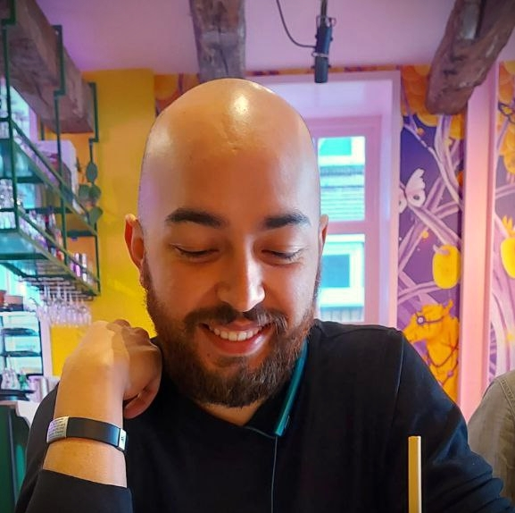

Cartographer of the 21st century.

Hi! my name is Iván Cárdenas, and I am a cartographer of the 21st century.
You may be wondering: in this age, a cartographer? Isn't the whole world already mapped?
Well, as the University of Wisconsin – Madison put it, "No, we cartographers are not explorers drawing borders in an ancient world. We are artists, community organizers, visual storytellers, data scientists, and full-stack developers."
I became a cartographer in a change of direction in my professional career.
I studied Environmental and Sanitary Engineering in Colombia after having retired from Anthropology. At the time, it was the right choice, a booming career, various job opportunities, the need to save the environment (I'm sure we will), and multiple industries to apply this knowledge.
I graduated and faced two challenges. Getting your first job is hard. I wasn't really passionate about engineering.
Fortunately, I had the opportunity to study for a postgraduate degree as an alternative to unemployment. I studied Geographic Information Systems and found a passion.
An area where I could mix science and art, take the knowledge I had gained in engineering, and apply it in a fascinating area full of maps. I liked it so much that I studied a Master's in Geo-information Science and Earth Observation in the Netherlands. Now I am even doing a PhD in Digital Twins.
This is what I do now; I make maps, especially for environmental studies, and I create images and tools that communicate the reality of the territory and project designs.
I apply graphic design, programming, and spatial and data analysis techniques to a single product.